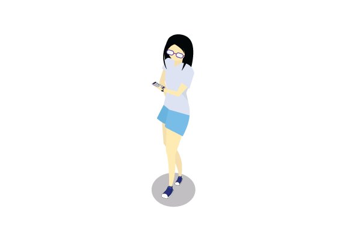

September 4, 2019
Project 1: Isometric Avatar

Isometric drawing is a style to create 3D drawings on a 2D surface using 30-degree angles. For our first project, we created isometric icons of ourselves using Adobe Illustrator. In my icon, the glasses are an essential part of my appearance since my eyesight is quite awful, and I rarely wear contacts anymore. Another aspect of myself that I added to the icon is my phone. I often read webtoons (digital comics) on my phone as a pastime and as a good break from schoolwork.
Since I wasn’t too experienced with isometric drawings, my first step for this project was looking into what isometric drawings were and examples of isometric vectors. Then, I drew quick sketches in my notebook to practice the perspective of the icon and the design that incorporates some aspect of myself.
While creating the vector on Illustrator, the isometric grid that was provided to us was helpful. My main problem with this project was getting my icon to look 3D; my icon still looks 2D. If I had time to improve this icon, I would try adding in more shading to make it look more 3D and tweaking the perspective to make it more isometric. Another difficult part for me was drawing the shoes.